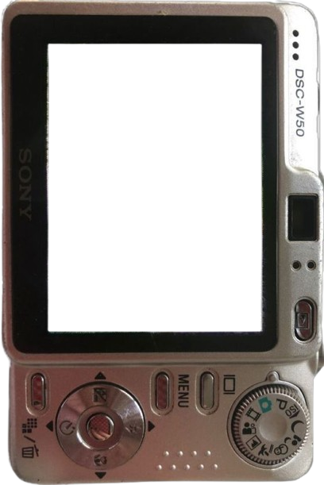

Diseño interfaces y las construyo.
Webs que hacen que tu proyecto se entienda y se tome en serio, y que puedas llevar tú.

Webs que hacen que tu proyecto se entienda y se tome en serio, y que puedas llevar tú.

Cuéntame qué tienes y qué te gustaría que pasara con tu web. Respondo rápido.
hola@aliverso.me